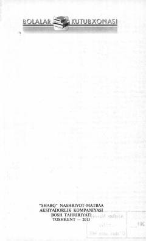

SNInsonni shayton vasvasalaridan ogohlantiruvchi va ezgulikka chorlovchi ma'rifiy qissa.
Ushbu ma'rifiy qissa insonlarni shayton vasvasalari va yomon illatlardan ogohlantirishga qaratilgan. Asarda yosh avlodni yomon xulq-atvor va shaytonat olami ta'siridan himoya qilish hamda ezgulikka chorlash masalalari yoritilgan.